Babble Loader
- Lab: Babble Loader trên CyberDefenders. Nhóm Malware Analysis, độ khó Insane, 19 câu hỏi, đã retired.
- Dữ liệu: một file
invoices.exe(PE64, 1.694.720 byte) trên máy ảo Windows Server 2016 của lab. Máy ảo không có internet. - Công cụ:
- x64dbg (breakpoint, lệnh
TraceIntoConditional/TraceOverConditionalghi log từng lệnh ra file). - PowerShell để đọc header PE và lọc file trace.
- Quy ước:
- Mẫu chỉ chạy bên trong x64dbg trên máy ảo của lab. Mọi patch đều ghi vào bộ nhớ tiến trình, không ghi ra file.
- Ảnh là ảnh chụp màn hình máy lab. Khung đỏ đánh dấu chỗ cần chú ý. Vùng làm mờ là đáp án.
Tóm tắt kết quả
invoices.exelà loader nhiều tầng, viết để làm khó cả phân tích tĩnh lẫn sandbox:- Chuỗi quan trọng (như
ntdll.dll) được dựng trên stack rồi giải XOR khi chạy. - Hàm API được tìm theo giá trị hash. Nhiều hàm Nt* được gọi bằng lệnh
syscalltrực tiếp, bỏ qua hook của EDR (phần mềm giám sát endpoint) trongntdll.dll. - Mẫu tạo đối tượng DXGI, đọc vendor ID của card màn hình và chỉ chạy tiếp nếu khớp một trong 3 giá trị cố định. Máy lab không khớp, nên mẫu tự gây lỗi truy cập bộ nhớ và dừng.
- Sau khi vượt kiểm tra GPU, mẫu giải mã shellcode tầng 1 vào vùng nhớ
0x190000. Shellcode này gọi một hàm Nt* qua syscall để lấy danh sách tiến trình, đếm số tiến trình và dừng nếu số tiến trình không vượt ngưỡng. - Tầng 2 là shellcode của một công cụ mã nguồn mở chuyên nạp .NET trong bộ nhớ. Nó nạp CLR, vá
AmsiScanBuffertrongamsi.dll, rồi chạy một assembly .NET dài 0x1EC00 byte ngay trong tiến trình.
Bước 1: header PE
- Mục tiêu: đọc subsystem và RVA của entry point.
- Cách làm: đọc trực tiếp các trường trong NT header bằng PowerShell. Offset tính từ
e_lfanew(giá trị tại 0x3C):+4là Machine,+24là Magic của Optional Header,+40là AddressOfEntryPoint,+48là ImageBase (PE32+),+92là Subsystem.
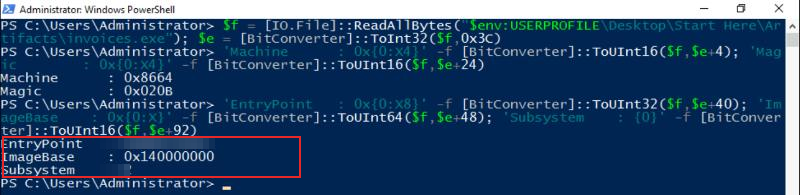
- Nhận định:
- Subsystem là một số. Đáp án là tên hằng số tương ứng trong tài liệu PE format của Microsoft (dạng
IMAGE_SUBSYSTEM_...). - AddressOfEntryPoint là RVA (địa chỉ tương đối so với ImageBase). Khi x64dbg dừng ở entry breakpoint, địa chỉ tuyệt đối bằng ImageBase cộng RVA này.
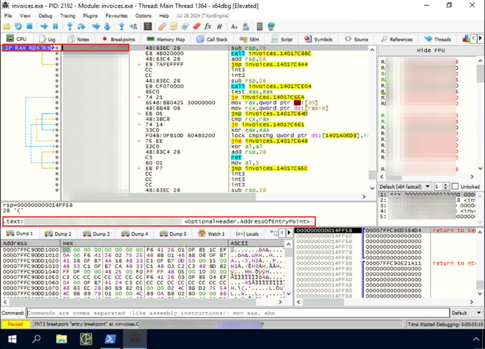
Bước 2: chuỗi mã hóa XOR
- Mục tiêu: tìm key XOR ban đầu dùng để giải chuỗi
ntdll.dll. - Cách làm:
- Đặt breakpoint ở
GetModuleHandleA(hàm có trong bảng import). Khi dừng, RCX trỏ tới chuỗintdll.dllđã được giải mã. - Lệnh
rtr(chạy tới lệnh return) đưa về hàm gọi ở0x1400017B0.
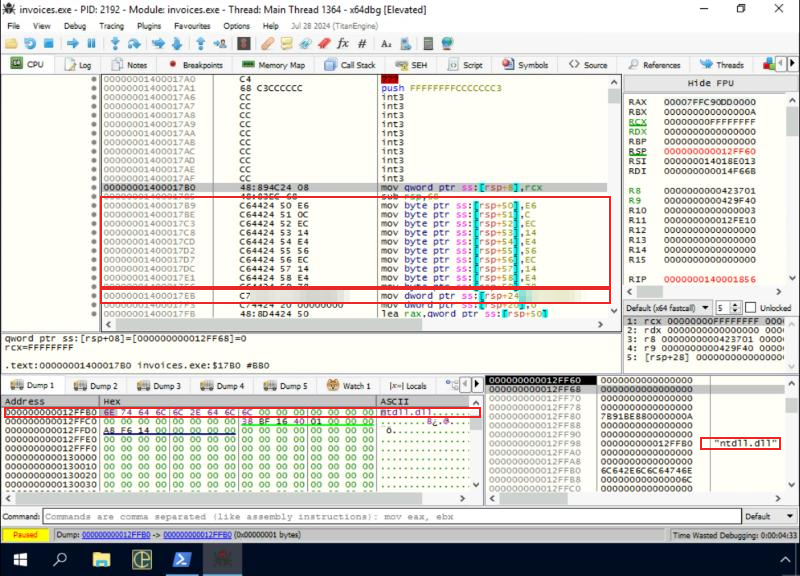
- Nhận định:
- Key là một DWORD và được biến đổi sau mỗi vòng, nên câu hỏi hỏi "giá trị ban đầu".
- Hướng giải: hằng số trong lệnh
mov dword ptr ss:[rsp+24], ...ngay sau 10 lệnhmov byte ptr.
Bước 3: API hashing và syscall trực tiếp
- Mục tiêu: hiểu cách mẫu tìm hàm Nt* và gọi syscall.
- Cách làm:
- Các hàm resolver nhận một giá trị hash 4 byte, duyệt bảng export của
ntdll.dll, băm từng tên hàm và so với giá trị đó. - Khi tìm thấy, resolver trả về số syscall (số hiệu dịch vụ của kernel) và một địa chỉ lệnh
syscallbên trongntdll.dll. Mẫu tự đặt số syscall vào EAX rồi nhảy tới địa chỉ này. - Ảnh trace ở Bước 6 cho thấy cơ chế đó:
mov eax, dword ptr ds:[r11]lấy số syscall,jmp qword ptr ds:[r11+0x10]nhảy tới lệnhsyscallở0x7FFC90E76862. - Nhận định:
- Gọi syscall theo cách này bỏ qua các hook mà EDR đặt ở đầu hàm trong
ntdll.dll. Breakpoint đặt ở tên hàm Nt* cũng không bao giờ dừng. - Hướng giải cho các câu về hash của
RtlAllocateHeap, hash 0x45E1B380 và 0x89DD5E00: đặt breakpoint ở hàm resolver, xem hash nào cho ra hàm nào. Sau đó đặt breakpoint ở lệnhsyscallđể đọc EAX (số syscall) và RDX (tham số thứ hai).
Bước 4: kiểm tra GPU bằng DXGI
- Mục tiêu: tìm GUID của IDXGIFactory, method đầu tiên được gọi và 3 vendor ID mà mẫu chấp nhận.
- Cách làm:
- Đặt breakpoint ở
CreateDXGIFactory. Tham số đầu (RCX) trỏ tới GUID của interface cần tạo. - Sau đó trace lệnh từ
CreateDXGIFactorycho tới khi mẫu tự gây lỗi, ghi mọi lệnh ratrace.txt(1.340 dòng), rồi lọc các lệnhcmpcó hằng số.
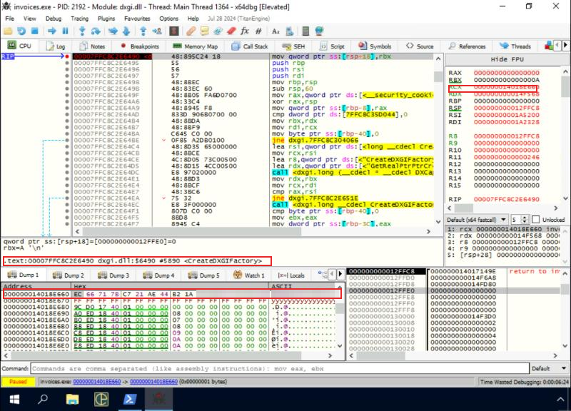
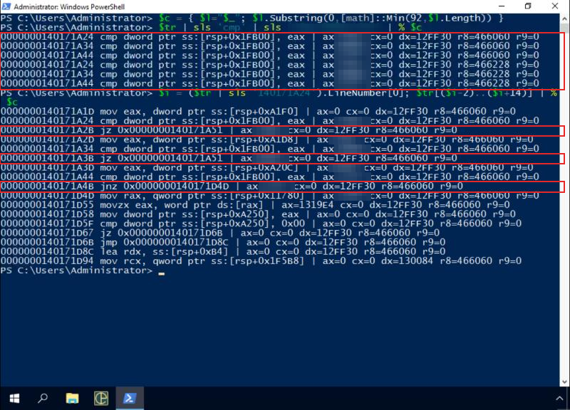
- Nhận định:
- Kiểm tra lặp 2 lần vì mẫu duyệt qua từng adapter (gọi method lấy adapter với chỉ số 0, 1). Máy lab không có adapter nào khớp.
- Trên máy lab, lỗi xuất hiện ở
0x1401767BD(EXCEPTION_ACCESS_VIOLATION). Đây là cách mẫu "chết" có chủ đích để tránh sandbox. - Hướng giải:
- GUID: 6 byte cuối trong dump ở trên.
- Method đầu tiên: method mà mẫu gọi qua vtable ngay sau
CreateDXGIFactory, dùng để lấy adapter theo chỉ số. Tên có dạngIDXGIFactory::.... - 3 vendor ID: giá trị EAX ở 3 dòng cmp, theo đúng thứ tự địa chỉ.
Bước 5: vượt kiểm tra GPU
- Mục tiêu: cho mẫu chạy tiếp để quan sát tầng shellcode.
- Cách làm:
- Đoạn code này tự giải mã khi chạy. Patch đặt sớm ở entry point bị ghi đè, mẫu vẫn chết.
- Cách làm được: dừng ở
CreateDXGIFactory(lúc code đã giải xong), rồi đổijzở0x140171A2Bthànhjmp 0x140171A51bằng lệnhasm.
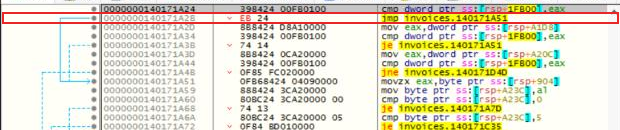
Bước 6: shellcode tầng 1
- Mục tiêu: tìm API dùng để thu thập thông tin hệ thống, tham số đầu của nó và ngưỡng số tiến trình.
- Cách làm:
- Đặt hardware breakpoint thực thi ở
0x190000. Sau patch, mẫu dừng ở đây sau 6.410 lệnh kể từ chỗ so sánh vendor ID. - Trace vào trong shellcode cho tới khi quay về module chính: 73.754 dòng log, trong đó 10.381 dòng thuộc vùng shellcode.
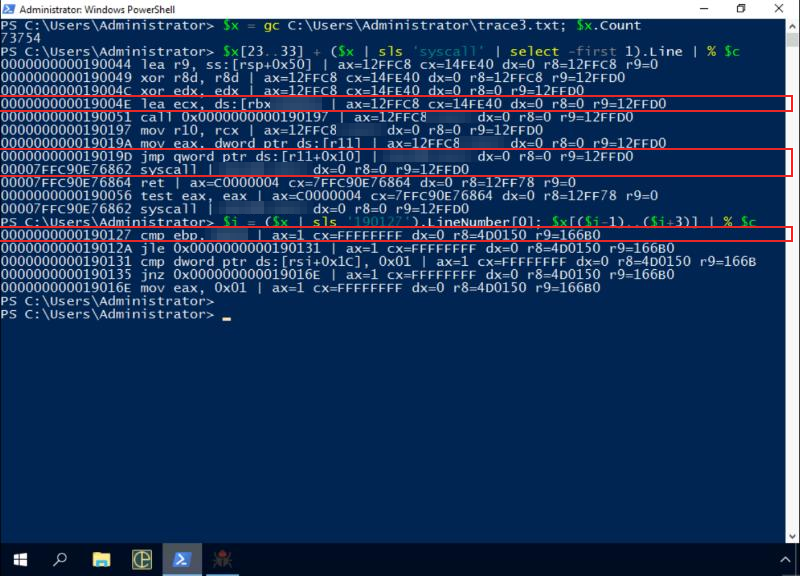
- Nhận định:
- Mẫu gọi cùng một syscall 2 lần. Lần đầu nhận mã 0xC0000004 (STATUS_INFO_LENGTH_MISMATCH), dùng kích thước trả về để cấp phát buffer bằng
RtlAllocateHeap(lệnhcall rdi), rồi gọi lại. Đây là mẫu gọi điển hình của các hàm truy vấn thông tin hệ thống. - Kết quả là danh sách tiến trình. Mẫu đếm số tên tiến trình khác nhau vào EBP.
- Hướng giải:
- API: hàm Nt* có số syscall nằm trong EAX lúc gọi
syscall, trên Windows Server 2016 bản 14393. - Tham số đầu: giá trị ECX, tra trong enum
SYSTEM_INFORMATION_CLASScủa MSDN để ra tên lớp thông tin. - Ngưỡng: hằng trong lệnh
cmp ebp, ...ở 0x190127.
- API: hàm Nt* có số syscall nằm trong EAX lúc gọi
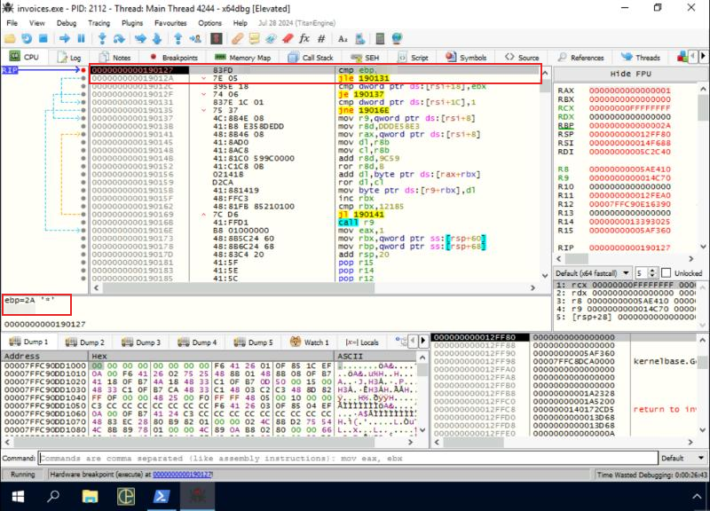
- Nhận định:
- Để chạy tiếp, tôi đổi EBP thành 0x100 (lệnh
ebp=0x100). Thay đổi này chỉ có tác dụng trong lần chạy đó. - Vòng lặp giải mã đọc dữ liệu tại
[rsi+8]cộng offset, nằm ngay sau phần code của shellcode tầng 1. Hướng giải cho câu về offset tầng 2: xem shellcode trỏ R9/RSI tới đâu trước vòng lặp này, tính so với đầu vùng0x190000.
Bước 7: bộ nạp .NET và vô hiệu AMSI
- Mục tiêu: xác định công cụ nạp .NET, lệnh vá AMSI và phiên bản CLR.
- Cách làm:
- Đặt breakpoint ở
AmsiScanBuffervàLoadLibraryA, cho chạy tiếp. - Tìm trong bộ nhớ chuỗi
ole32;oleaut32(lệnhfindallmem).
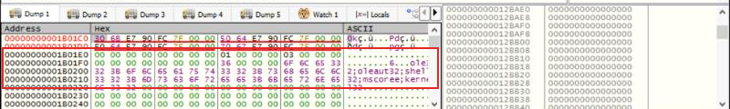
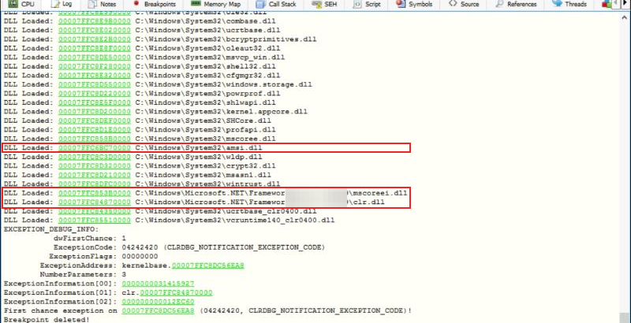
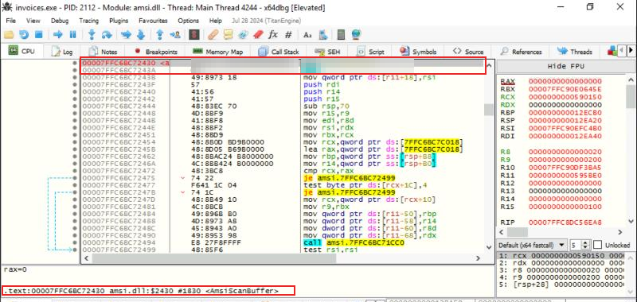
- Nhận định:
- Chuỗi DLL ngăn bằng dấu chấm phẩy, cách nạp CLR rồi vá AMSI khớp với mã nguồn công khai của một shellcode generator nổi tiếng dùng để chạy .NET, PE và script trong bộ nhớ. Hướng giải: tìm chuỗi DLL này trên GitHub để ra tên công cụ.
- Lệnh vá đặt mã lỗi vào RAX rồi trả về ngay. Hàm gọi nhận mã lỗi đó và bỏ qua việc quét.
- Hướng giải: lệnh vá là 2 lệnh đầu của
AmsiScanBuffertrong ảnh. Phiên bản CLR là tên thư mục chứaclr.dll.
Bước 8: payload .NET cuối cùng
- Mục tiêu: trích payload .NET, tính SHA-256 và xác định họ mã độc.
- Cách làm:
- Tìm header
MZtrong vùng nhớ của bộ nạp: có ở0x1C0528. - Lưu 0x80000 byte từ đó ra file bằng
savedata, đọc section table để biết kích thước thật:.text,.rsrc,.reloc, kết thúc ở 0x1EC00 (125.952 byte). - Kiểm tra lại bằng trường độ dài mà bộ nạp ghi ngay trước header MZ: cũng là 0x1EC00.
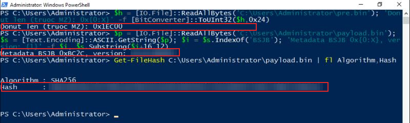
- Nhận định:
- Tôi trích payload 2 cách (theo độ dài bộ nạp ghi và theo section table) và cả 2 cho cùng kích thước. Tuy vậy, SHA-256 tôi tính được không khớp với mẫu đáp án mà đề bài gợi ý (6 byte đầu). Vì vậy giá trị hash phụ thuộc vào đúng vùng nhớ bạn dump. Walkthrough chính thức dump buffer mà bộ nạp đưa cho CLR bằng lệnh
savedata. - Hash tôi tính chưa có trên VirusTotal, và chuỗi trong assembly đã bị làm rối. Vì vậy tôi chưa tự xác nhận được họ mã độc trên máy lab. Hướng giải: tra hash đúng trên VirusTotal, xem nhãn của các engine (dạng
MSIL/...) để ra tên infostealer. - Kích thước shellcode giải mã (câu về payload nhúng): cộng kích thước các đoạn mà lệnh
rep movsbchép vào vùng nhớ doNtMapViewOfSectiontạo ra. Đặt hardware breakpoint ghi lên vùng nhớ đó để bắt từng lần chép.
Dòng thời gian thực thi
| Thứ tự | Vị trí | Sự kiện | Bằng chứng |
|---|---|---|---|
| 1 | Entry point (stub CRT) | Bắt đầu chạy | x64dbg entry breakpoint |
| 2 | 0x1400017B0 | Giải chuỗi ntdll.dll bằng XOR, gọi GetModuleHandleA |
Disassembly, dump RCX |
| 3 | Hàm resolver | Tìm hàm Nt* theo hash, lấy số syscall | Trace, lệnh mov eax,[r11] |
| 4 | CreateDXGIFactory |
Tạo DXGI factory, liệt kê adapter | Breakpoint, GUID trong RCX |
| 5 | 0x140171A24–0x140171A44 | So vendor ID với 3 giá trị, sai thì tự gây lỗi | trace.txt, 1.340 dòng |
| 6 | 0x190000 | Shellcode tầng 1 chạy, gọi syscall lấy danh sách tiến trình | trace3.txt, 73.754 dòng |
| 7 | 0x190127 | So số tiến trình với ngưỡng, giải mã tầng 2 | Breakpoint phần cứng |
| 8 | Tầng 2 (bộ nạp .NET) | Nạp amsi.dll, CLR, vá AmsiScanBuffer |
Log x64dbg, disassembly |
| 9 | 0x1C0528 | Payload .NET 0x1EC00 byte được nạp trong bộ nhớ | savedata, section table |